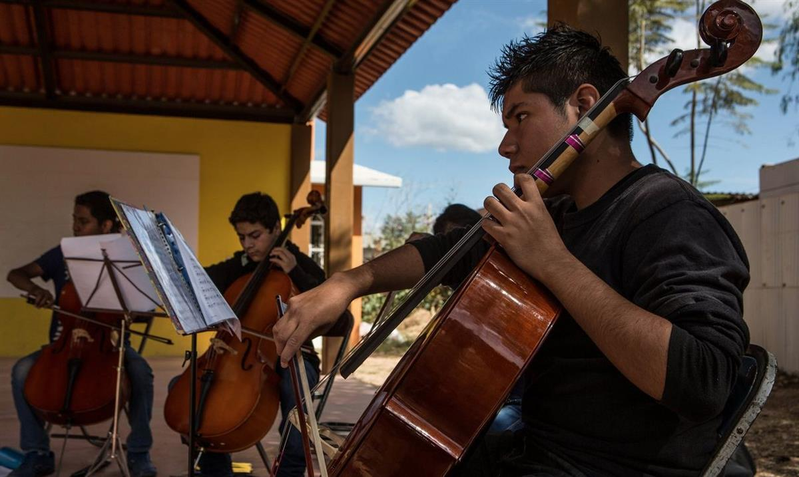
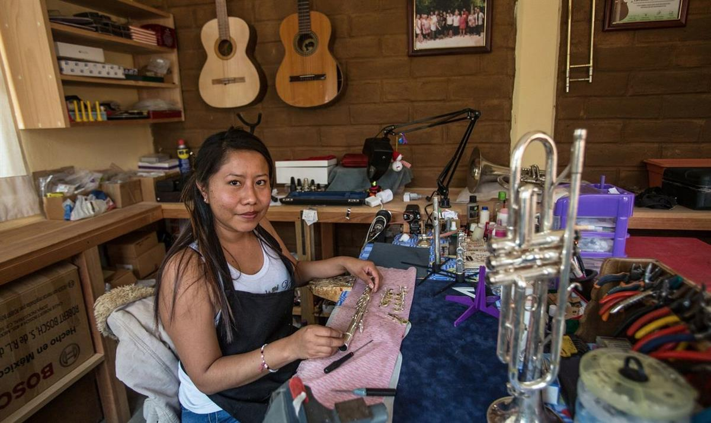

Band members carry their instruments home after practising at the Vicente Guerrero music school. Photograph: Ginnette Riquelme for the Guardian
Nina Lakhani in Vicente Guerrero
Monday 21 November 2016 12.18 GMT
Young musicians from the makeshift Oaxaca neighbourhood of Vicente Guerrero have defied the odds to offer hope to their blighted community
On a fine Saturday morning, the music school in Vicente Guerrero is abuzz with preparations for the debut concert of its chamber orchestra: in one shady corner, a group of fledgling clarinetists are practising breathing exercises; in the courtyard, the cello section are rehearsing scales; nearby, a flute lesson for five schoolgirls is under way.
What makes this idyllic scene so remarkable is Vicente Guerrero’s location on the edge of a vast rubbish dump. The community, in one of Mexico’s poorest states, has a reputation for drug abuse and gang violence. But it is undergoing a transformation after a fortuitous encounter with a French pilot helped launch a musical venture offering rare hope to its youth.
Vicente Guerrero is just 10 miles south of Oaxaca, a former colonial city where tourists flock, but it is a world away from the pre-Columbian ruins and world-famous cuisine. City officials opened the rubbish dump in the 1980s on what was then uninhabited wasteland. Over the years, poor families – mostly migrants from across Mexico and Central America – constructed makeshift houses on the fringes of the gaping landfill, and the neighbourhood is now home to 13,000 people.
But Vicente Guerrero still has few basic services. It has many churches, but just one health clinic and one paved road. Graffiti marks almost every building.
The music school opened in 2011 as part of a violence-prevention programme set up by the local Catholic church. Camerino Lopez, 33, a clarinet player from Oaxaca’s indigenous Zapoteco region, was recruited to lead the project. Its first year, 25 students learned to read music and tapped out rhythms on empty buckets and chairs.
“The community’s reputation was so bad that that at first no other music teachers would come here,” said Lopez. “People joked that in Vicente Guerrero they kill for free. Now that’s changing, and people feel proud.”
Change started when Isabelle de Boves, a French pilot, came to visit her elderly aunt, a nun who lived nearby. Impressed by the makeshift music school, de Boves began collecting unwanted instruments from friends and relatives back home. Within a couple of months she sent her first shipment: 21 trumpets, trombones, clarinets and saxophones.
“From the first time I met the children, they had stars in [their] eyes, and spoke about their dreams as musicians,” said De Boves. “Their parents are good people: they fight for this project, selling tortillas after mass every Sunday to buy instruments. They didn’t expect anything and were not used to receiving help.”
Since then, De Boves has organised countless benefit concerts in Paris to buy instruments, fund scholarships, and send musicians to give classes at the school, which was built by the parents using materials paid for by Air France’s charitable foundation.

Rigoberto, 15, plays the cello. Photograph: Ginnette Riquelme for the Guardian
The school, which now has 100 students, has become a focal point of the community and even the most sceptical parents are allowing their children to attend.
Armando Júarez, 13, is the only sousaphone player – and one of the school’s most challenging pupils. He joined last year around the same time he dropped out of primary school, where he was in constant trouble for skipping classes and talking back to the teachers.
“I preferred hanging out in the streets and doing graffiti with my friends,” said Júarez, whose antics led to frequent fights with boys in other neighbourhoods.
Júarez is shy, short-tempered and just the kind of youngster the school was set up to serve. He has never met his father, his mother works long hours to make ends meet, and his cousins are involved with local gangs.
“Music relaxes me,” says Júarez. “I’ve made new friends here, I hardly hang out on the streets anymore.”
The school now boasts 165 instruments and an impressive workshop run by local woman Patricia García, 25, who gained a scholarship to study instrument repair in Paris. Most students pay 60 pesos (£2.50) per week, but those from the poorest families attend for free.
Oaxaca has a rich musical history and most neighbourhoods have brass bands that perform at parties and religious functions. The Vicente Guerrero school band is now gaining a reputation and plays at masses, festivals, community events – and most recently at the city’s children’s hospital.

Patricia García in her workshop. Photograph: Ginnette Riquelme for the Guardian
This year, the school has assembled an orchestra with a full string section. It makes its debut on Tuesday as part of International Music Day celebrations.
On a recent morning, Vanessa Silva Vásquez, 8, was trying her best to grasp finger placements for the flute. She really wanted to play the saxophone, but her front tooth fell out and its replacement is stubbornly refusing to come through. Until that happens, the sax is out of the question. Nonetheless, she diligently attends classes six days a week.
Vásquez’s parents moved from the coast 10 years ago to find work. “I never had the chance to play an instrument but music can distract children, stop them getting into trouble,” said her mother, Maria de Los Angeles Vásquez, 29. “It’s a long day after school, but Vanessa loves it and can’t wait till she’s good enough for the band.”
Music has buoyed this community’s collective sense of worth, and is opening doors for some of the children who are starting to believe in themselves.
Florida Velasquez, 15, a talented clarinetist, was recently accepted at the prestigious Cecam indigenous music school, becoming the fifth Vicente Guerrero student to gain a place studying elsewhere.
Her brother Octavio, 19, a percussionist, was also accepted to Cecam, but was forced to drop out to work as a builder to support his family. He still plays in the band.
Velasquez still dreams of becoming a professional musician, and wants to buy her family a house. “Life has been really hard for us and I worry about my family all the time, but music helps me imagine life outside of this neighbourhood – and think about a different future.”
SOURCE: THE GUARDIAN